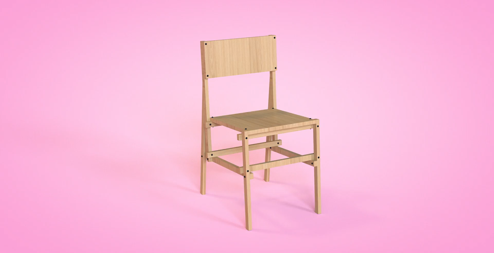

Product Design · 2022
TISBE CHAIR
Self-producible seat designed for Open Gardens events using eco-sustainable materials
The Tisbe concept was born to create a self-producing seat made up of a few essential elements for its construction, simple even for the most amateur in the field. The seat is made up of 12 slats with a section of 3×2 cm (of variable length) and 2 types of screws which are divided into buried screws of two different lengths and wood screws.
The supporting structure of the seat is simple but original, characterised by a triangle shape on the back which makes it stable and solid. The material used is ash wood due to its excellent mechanical characteristics, such as hardness and flexibility, but also due to the soft colour it presents, a shade from light blond to pink.
Furthermore, the manufacturing process of this material is quite simple, being able to plane, saw and assemble it with extreme ease.

Chair Details


Outdoor Setting

Logo, Graphics and Sketch
How can we, through self-production, create a seating system suitable for an Open Gardens event? Using eco-sustainable materials, easily available and assembled, which restore a sense of comfort capable of enhancing the environment surroundings, highlighting the open spaces and encouraging these social events.
The colours chosen in the palette are inspired by botany, in particular by the mulberry plant and its fruit. Mulberry is a plant known for its delicious fruits similar to blackberries and for the history that links it to the silkworm. Its botanical name is Morus L., a term which identifies a genus of plants belonging to the Moraceae family.


Communication Strategy
The Tisbe seat, thanks to its usability and assembly, has been designed for the use of a wide range of users. It is in fact an economic and simple seat contained in a small packaging including easy-to-understand instructions.
The seat is on sale on the e-commerce site and in some design fairs and events where it is possible to find the digital file and the paper brochure with the assembly instructions, the packaging containing all the pre-cut materials, the screws and bolts for assembling the seat, and various products branded with the logo and trademark.

Social Media Planning